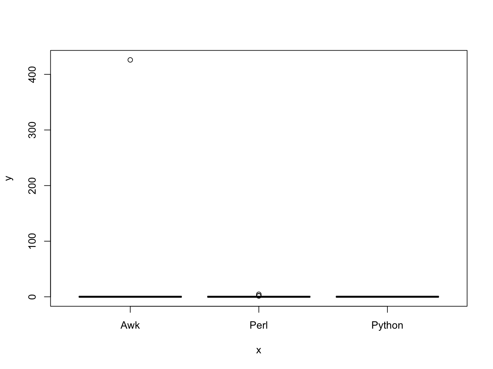
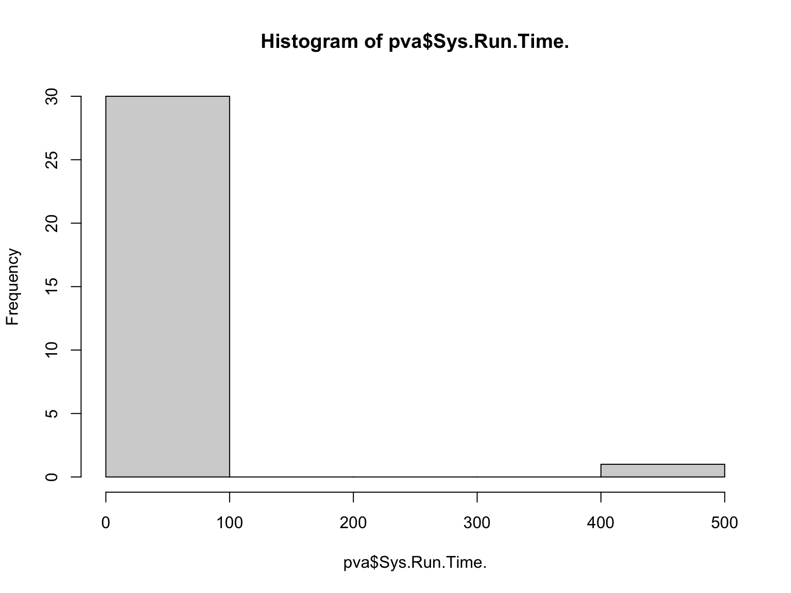

Advanced Statstical Concepts in R
Laurie Stevison & Amanda Clark
Getting Started
If you are using this code with the video, note that some slides
have been added post-recording and are not shown. See walkthrough2.R in
the compressed data tarball for the code from the recording.
For this tutorial we will be working with the “Lab6_Perl_v_Awk.csv”
“BodyFat.csv” datasets.
Make an R Notebook for this walk-through tutorial to save all the
code you will be learning. We will cover:
- Practice reading in datasets with more complexity
- Making boxplots of factor data
- Subsetting data in different ways
- Fitting data to statistical models
Set up workspace
You are working within an R project (check in the top right
corner of RStudio - you should see the project name
“R_Mini_Course”).
This means that the project directory will also be set as working
directory. The exception is in a R Notebook, where the working directory
is where the R Notebook is saved.
You should be saving your notebooks in the R Project and using
../.. to point at the main project directory.
Before starting, it may be helpful to have a chunk of code that
does the following:
- clear your workspace
rm(list=ls())
- load your packages
library(<package-name>)
- check your session information
sessionInfo()
- list files in your working directory
list.files(getwd())
Read in datasets
Our first dataset will be a summary of results from Lab #6: A
comparisons of awk and perl.
You will need to add path information to the raw_data
directory once you have uncompressed the data tarball.
Read “Lab6_Perl_v_Awk.csv” into an object called
pva:
#pva=read.csv(file="Lab6_Perl_v_Awk.csv")
#View(pva)
Read “BodyFat.csv” into an object called fat:
#fat=read.csv(file="BodyFat.csv")
You may also read in the previously made object:
pva <- readRDS(file = "data/Perl_v_Awk.rds")
head(pva, 3)
## ID Start.time Completion.time Operating.System...i.e..iOS..Ubuntu. Programming.Language. Sys.Run.Time.
## 1 2 10/19/20 16:05 10/19/20 16:29 IOS Awk na
## 2 3 10/19/20 17:56 10/19/20 17:58 Mac OS Perl 0.031
## 3 4 10/19/20 17:58 10/19/20 17:58 Mac OS Awk 0.03
## Input.VCF.File.Size.
## 1 Full
## 2 Full
## 3 Full
fat <- readRDS(file = "data/BodyFat.rds")
head(fat, 3)
## IDNO BODYFAT DENSITY AGE WEIGHT HEIGHT ADIPOSITY NECK CHEST ABDOMEN HIP THIGH KNEE ANKLE BICEPS FOREARM
## 1 1 12.6 1.0708 23 154.25 67.75 23.7 36.2 93.1 85.2 94.5 59.0 37.3 21.9 32.0 27.4
## 2 2 6.9 1.0853 22 173.25 72.25 23.4 38.5 93.6 83.0 98.7 58.7 37.3 23.4 30.5 28.9
## 3 3 24.6 1.0414 22 154.00 66.25 24.7 34.0 95.8 87.9 99.2 59.6 38.9 24.0 28.8 25.2
## WRIST X
## 1 17.1 NA
## 2 18.2 NA
## 3 16.6 NA
Click the data object in the environment tab in RStudio…
Notice these five columns of data:
ID (Student)Sys.Run.Time. (Run Time)Programming.Language. (e.g. Perl; Awk)Input.VCF.File.Size (Partial/Full File)Operating.System...i.e..iOS..Ubuntu. (OS)
We also have some missing data.
Compare runtime of Perl versus Awk
Let’s compare the distribution of run times for each language.
#plot(pva$Programming.Language.,pva$Sys.Run.Time.)
Notice, the plot looks unexpected or it did not plot at all. That is
because we have some missing data and columns that have not been coded
correctly.
If you are reading in the raw data, we can read the data in again -
specifying that the string “na” should be coded as missing data and
columns with strings should be treated as factors (this means that these
columns can be summarized into categories or levels).
#pva=read.csv(file="Lab6_Perl_v_Awk.csv",na.strings="na",stringsAsFactors = T)
If you are reading in the saved data object in the beginning, let’s
get some extra practice with dplyr (introduced in Module 3)
to perform these same modifications, step-by-step.
pva <- dplyr::na_if(pva, "na")
head(pva, 3)
## ID Start.time Completion.time Operating.System...i.e..iOS..Ubuntu. Programming.Language. Sys.Run.Time.
## 1 2 10/19/20 16:05 10/19/20 16:29 IOS Awk <NA>
## 2 3 10/19/20 17:56 10/19/20 17:58 Mac OS Perl 0.031
## 3 4 10/19/20 17:58 10/19/20 17:58 Mac OS Awk 0.03
## Input.VCF.File.Size.
## 1 Full
## 2 Full
## 3 Full
Notice the “na” strings are now properly coded as NAs (compare with
slide 5). If you run summary on the object, we still have the issue of
Sys.Run.Time. being coded as “character” data.
Let’s see how we can fix that on the next slide…
pva$Sys.Run.Time. <- as.numeric(pva$Sys.Run.Time.)
summary(pva)
## ID Start.time Completion.time Operating.System...i.e..iOS..Ubuntu. Programming.Language.
## Min. : 2 Length:37 Length:37 Length:37 Length:37
## 1st Qu.:11 Class :character Class :character Class :character Class :character
## Median :20 Mode :character Mode :character Mode :character Mode :character
## Mean :20
## 3rd Qu.:29
## Max. :38
##
## Sys.Run.Time. Input.VCF.File.Size.
## Min. : 0.0000 Length:37
## 1st Qu.: 0.0160 Class :character
## Median : 0.0490 Mode :character
## Mean : 14.0506
## 3rd Qu.: 0.1205
## Max. :426.0000
## NA's :6
Fixed! Lastly, we want to make sure the other columns are treated as
categorical.
Here, we are specifying two columns to be treated as categorical
(i.e., mutate the data across Programming.Language. &
Input.VCF.File.Size. by coding them factors).
Remember the %>% symbol from magrittr (tidyverse) is
a pipe.
pva <- pva %>% dplyr::mutate(across(c(Programming.Language., Input.VCF.File.Size.), as.factor))
Use summary to see the changes made to the two columns
of data we converted to factors.
We could convert all “character” columns to factors by replacing
...across(c(<columns>, <targeted>),...
with
...across(where(is.character),...
Let’s try the plot again:
pva$Programming.Language. <- as.factor(pva$Programming.Language.)
plot(pva$Programming.Language.,pva$Sys.Run.Time.)

Now, we have a box plot of each dataset.
What modification could you make to better visualize this plot?
Basic Summary Statistics
Let’s revisit some basic summary statistics for this dataset.
## ID Start.time Completion.time Operating.System...i.e..iOS..Ubuntu. Programming.Language.
## Min. : 2 Length:37 Length:37 Length:37 Awk :13
## 1st Qu.:11 Class :character Class :character Class :character Perl :18
## Median :20 Mode :character Mode :character Mode :character Python: 6
## Mean :20
## 3rd Qu.:29
## Max. :38
##
## Sys.Run.Time. Input.VCF.File.Size.
## Min. : 0.0000 Full :22
## 1st Qu.: 0.0160 Partial:15
## Median : 0.0490
## Mean : 14.0506
## 3rd Qu.: 0.1205
## Max. :426.0000
## NA's :6
Notice the range for mean run time is quite skewed. Let’s look at the
overall distribution

Remove outliers
Because the majority of our observations are less than 1 and some
folks may have put actual run time instead of SysRunTime, let’s go ahead
and exclude these extreme values and look at the boxplot again:
pva2=subset(pva,pva$Sys.Run.Time.<=1)
plot(pva2$Programming.Language.,pva2$Sys.Run.Time.,main="Perl versus Awk",xlab="Programming Language",ylab="Sys Time in Seconds")

Now we can see the boxes a bit better and while we still have
outliers, we’ve mostly removed the extremes.
Examine mean in each group
From the boxplots, it looks like Awk is a bit slower than Perl, but
let’s compare the means of each group:
mean(pva2$Sys.Run.Time.[pva2$Programming.Language.=="Perl"])
## [1] 0.04375
mean(pva2$Sys.Run.Time.[pva2$Programming.Language.=="Awk"])
## [1] 0.06309091
Notice this new way of subsetting from categorical data.
But didn’t we do large and small file sizes? We should look at this
a bit closer.
First, let’s look at the full size file results:
full=subset(pva2,pva2$Input.VCF.File.Size.=="Full")
plot(full$Programming.Language.,full$Sys.Run.Time.,main="Perl versus Awk for Full File",xlab="Programming Language",ylab="Sys Time in Seconds")

Here, Perl appears faster than Awk, with Python the slowest. But what
about for the smaller file when you used head to get only
the first 10,000 lines?
Smaller file size comparison
Now, let’s look at the small size fill results:
small=subset(pva2,pva2$Input.VCF.File.Size.=="Partial")
plot(small$Programming.Language.,small$Sys.Run.Time.,main="Perl versus Awk for Small File",xlab="Programming Language",ylab="Sys Time in Seconds")

Now, Perl and Awk are pretty similar to each other and python is
still the slowest.
Again, let’s look at the mean values:
#full file size
mean(full$Sys.Run.Time.[full$Programming.Language.=="Perl"])
## [1] 0.06314286
mean(full$Sys.Run.Time.[full$Programming.Language.=="Awk"])
## [1] 0.0995
#short file size
mean(small$Sys.Run.Time.[small$Programming.Language.=="Perl"])
## [1] 0.0166
mean(small$Sys.Run.Time.[small$Programming.Language.=="Awk"])
## [1] 0.0194
So, the means are different, but are they statistically
different?
Is this a statistical difference?
We can test this by using the function aov which fits
the data to an analysis of variance model. This calls the
lm function, which is for linear models.
model_full=aov(full$Sys.Run.Time.~full$Programming.Language.)
model_small=aov(small$Sys.Run.Time.~small$Programming.Language.)
#get AOV Table
summary(model_full)
## Df Sum Sq Mean Sq F value Pr(>F)
## full$Programming.Language. 2 0.01012 0.005058 0.815 0.466
## Residuals 12 0.07444 0.006204
## Df Sum Sq Mean Sq F value Pr(>F)
## small$Programming.Language. 2 0.0006213 0.0003106 0.955 0.42
## Residuals 9 0.0029264 0.0003252
Answer: NO! So, don’t do anything rash, like choose a particular
language based on these data!
On your own: We also recorded OS in this dataset. On your
own, compare the sys run time based on OS just like we did here using
Programming Language. If you chose to read in the pre-existing object,
remember to revisit the code we used to correctly code our categorical
columns.
Now, let’s return to the “BodyFat.csv” dataset
Basic Summary Statistics:
As we did before, let’s revisit some basic summaries of this
dataset.
#statistical summary of data
summary(fat)
## IDNO BODYFAT DENSITY AGE WEIGHT HEIGHT
## Min. : 1.00 Min. : 0.00 Min. :0.995 Min. :22.00 Min. :118.5 Min. :29.50
## 1st Qu.: 63.75 1st Qu.:12.80 1st Qu.:1.041 1st Qu.:35.75 1st Qu.:159.0 1st Qu.:68.25
## Median :126.50 Median :19.00 Median :1.055 Median :43.00 Median :176.5 Median :70.00
## Mean :126.50 Mean :18.94 Mean :1.056 Mean :44.88 Mean :178.9 Mean :70.15
## 3rd Qu.:189.25 3rd Qu.:24.60 3rd Qu.:1.070 3rd Qu.:54.00 3rd Qu.:197.0 3rd Qu.:72.25
## Max. :252.00 Max. :45.10 Max. :1.109 Max. :81.00 Max. :363.1 Max. :77.75
## ADIPOSITY NECK CHEST ABDOMEN HIP THIGH
## Min. :18.10 Min. :31.10 Min. : 79.30 Min. : 69.40 Min. : 85.0 Min. :47.20
## 1st Qu.:23.10 1st Qu.:36.40 1st Qu.: 94.35 1st Qu.: 84.58 1st Qu.: 95.5 1st Qu.:56.00
## Median :25.05 Median :38.00 Median : 99.65 Median : 90.95 Median : 99.3 Median :59.00
## Mean :25.44 Mean :37.99 Mean :100.82 Mean : 92.56 Mean : 99.9 Mean :59.41
## 3rd Qu.:27.32 3rd Qu.:39.42 3rd Qu.:105.38 3rd Qu.: 99.33 3rd Qu.:103.5 3rd Qu.:62.35
## Max. :48.90 Max. :51.20 Max. :136.20 Max. :148.10 Max. :147.7 Max. :87.30
## KNEE ANKLE BICEPS FOREARM WRIST X
## Min. :33.00 Min. :19.1 Min. :24.80 Min. :21.00 Min. :15.80 Mode:logical
## 1st Qu.:36.98 1st Qu.:22.0 1st Qu.:30.20 1st Qu.:27.30 1st Qu.:17.60 NA's:252
## Median :38.50 Median :22.8 Median :32.05 Median :28.70 Median :18.30
## Mean :38.59 Mean :23.1 Mean :32.27 Mean :28.66 Mean :18.23
## 3rd Qu.:39.92 3rd Qu.:24.0 3rd Qu.:34.33 3rd Qu.:30.00 3rd Qu.:18.80
## Max. :49.10 Max. :33.9 Max. :45.00 Max. :34.90 Max. :21.40
## [1] 118.50 363.15
## [1] 0.0 45.1
Summary is a much more comprehensive view of this dataset.
Analyzing a complex dataset
In a previous video, you were asked to analyze this dataset on your
own. Each of you did independent correlations of each variable and how
it correlated with bodyfat. Because these were non-independent tests, we
have to correct for multiple testing. However, a better way to compare
how different parameters predict a response variable is to fit the data
to a more complex model
#first, like aov, we will fit a generalized linear model:
fit=glm(BODYFAT~WEIGHT+DENSITY+ADIPOSITY+AGE+HEIGHT+NECK+CHEST+ABDOMEN+HIP+THIGH+KNEE+ANKLE+BICEPS+FOREARM+WRIST,data=fat)
#to see the fit, we will make a summary table
summary(fit)
##
## Call:
## glm(formula = BODYFAT ~ WEIGHT + DENSITY + ADIPOSITY + AGE +
## HEIGHT + NECK + CHEST + ABDOMEN + HIP + THIGH + KNEE + ANKLE +
## BICEPS + FOREARM + WRIST, data = fat)
##
## Deviance Residuals:
## Min 1Q Median 3Q Max
## -7.7632 -0.3308 -0.0954 0.2078 13.9487
##
## Coefficients:
## Estimate Std. Error t value Pr(>|t|)
## (Intercept) 4.190e+02 9.802e+00 42.750 <2e-16 ***
## WEIGHT 1.197e-02 1.467e-02 0.816 0.415
## DENSITY -3.816e+02 7.559e+00 -50.481 <2e-16 ***
## ADIPOSITY -5.493e-02 8.113e-02 -0.677 0.499
## AGE 1.078e-02 8.808e-03 1.224 0.222
## HEIGHT -1.782e-02 3.019e-02 -0.590 0.556
## NECK -2.062e-02 6.427e-02 -0.321 0.749
## CHEST 2.993e-02 2.856e-02 1.048 0.296
## ABDOMEN 2.260e-02 3.016e-02 0.749 0.454
## HIP 1.611e-02 4.023e-02 0.401 0.689
## THIGH 1.354e-03 3.980e-02 0.034 0.973
## KNEE -3.978e-02 6.705e-02 -0.593 0.554
## ANKLE -7.170e-02 6.073e-02 -1.181 0.239
## BICEPS -6.291e-02 4.688e-02 -1.342 0.181
## FOREARM 4.324e-02 5.447e-02 0.794 0.428
## WRIST 3.640e-02 1.480e-01 0.246 0.806
## ---
## Signif. codes: 0 '***' 0.001 '**' 0.01 '*' 0.05 '.' 0.1 ' ' 1
##
## (Dispersion parameter for gaussian family taken to be 1.359181)
##
## Null deviance: 15079.02 on 251 degrees of freedom
## Residual deviance: 320.77 on 236 degrees of freedom
## AIC: 809.95
##
## Number of Fisher Scoring iterations: 2
Here, we have built a statistical model to show how body fat varies
due to MULTIPLE parameters in the data.